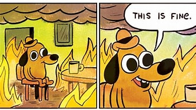

Hi there, I'm Dany. I'm just a random 34yr old trying to learn how to do some basic html coding. My current hobbie is playing a video game called "Cult of the Lamb", but it'll probably only last about a week or two.
I currently work as a processing analyst in a credit reporting agency. I'm hoping this bootcamp will help me further develop my career.
This is my mood at work:

Bootcamp Desired Outcome
I hope to learn the follwing skills:
Problem-Solving: Problem-solving is a core computer science skill. Programmers must understand how humans solve problems and translate that process into an algorithm — a set of steps — that computers can follow. In addition, programmers must write the syntax for solving these problems.
Computer Languages: Computer languages render commands into code computers can process. Coding professionals must be proficient in languages like Java. Most full-stack bootcamps include extensive coursework in computer languages.
Code-Testing: Programmers test code in two ways: manually and automatically. Manual testing involves going through code by hand, looking for areas for improvement. Automated testing uses tools to perform the most time-consuming, repetitive tests on large projects.
Pair Programming: Pair programming happens when two people write code together using just one machine. Usually, coders use pair programming when they want to discuss their work, strategize together, and get instant feedback from a partner. This kind of workstyle often results in higher-quality code with fewer bugs.